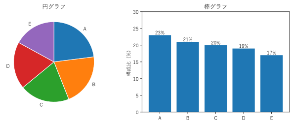
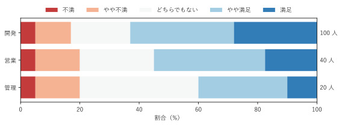
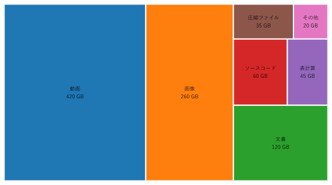
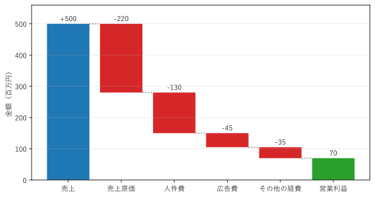

第 6 章 構成比を見る
全体がどのような部分から成り立っているか、つまり構成比（内訳の割合）を見せたい場面は多い。この章では、円グラフ、100% 積み上げ棒グラフ、ツリーマップ、ウォーターフォールチャートを扱う。
円グラフ
円グラフは、全体を円で表し、各部分の割合を扇形の角度（と面積）で表すグラフである。中心をくり抜いたものをドーナツグラフという。「全体に対する部分」という関係を直感的に示せるため、広く使われている。
一方、第 2 章で説明したように、角度と面積は長さや位置よりも正確に読み取りにくい。図 18 は、値の近い 5 項目の構成比を、円グラフと棒グラフで描いたものである。

図 18 同じ構成比の円グラフ（左）と棒グラフ（右）
円グラフでは、A から E の大小の順を判断するのは難しい。棒グラフなら、A が最も多く、E が最も少ないことがすぐに分かる。
円グラフは、次の条件を満たす場合に限って使うとよい。
項目が少ない（2 から 5 程度）。
「半分以上を占める」「4 分の 1 程度」のように、全体に対するおおまかな割合を伝えたい。
項目どうしの細かな比較は必要ない。
また、扇形は 12 時の位置から時計回りに、大きい順（「その他」は最後）に並べるのが一般的である。3D の円グラフは、手前の扇形が大きく見えるため使わない。
17def create_figure() -> Figure:
18 """同じ構成比を円グラフと棒グラフで描く."""
19 fig, (ax_left, ax_right) = plt.subplots(1, 2, figsize=(9, 3.6))
20 ax_left.pie(list(SHARES.values()), labels=list(SHARES), startangle=90,
21 counterclock=False, wedgeprops={"edgecolor": "white"})
22 ax_left.set_title("円グラフ")
23
24 bars = ax_right.bar(list(SHARES), list(SHARES.values()), color="C0")
25 ax_right.bar_label(bars, fmt="%d%%")
26 ax_right.set_ylim(0, 30)
27 ax_right.set_ylabel("構成比（%）")
28 ax_right.set_title("棒グラフ")
29 fig.tight_layout()
30 return fig
pie() の startangle=90 と counterclock=False で、12 時の位置から時計回りに並べている。
サンプルの全体：ch06_pie_bar.py
100% 積み上げ棒グラフ
複数のグループの構成比を比べるには、各グループの合計を 100% にそろえて積み上げる100% 積み上げ棒グラフを使う。円グラフを複数並べるよりも、比較が容易である。
図 19 は、架空の社内満足度調査の回答（5 段階）を、部署ごとの割合で描いたものである。

図 19 部署ごとの満足度の回答割合
部署の人数は 100 人、40 人、20 人と大きく異なるが、割合にすることで比較できる。「やや満足」と「満足」を合わせた割合は、開発が最も高く、管理が最も低いことが分かる。
100% 積み上げ棒グラフでは、両端の区分（「不満」と「満足」）は端がそろっているので比べやすいが、中間の区分は比べにくい。そのため、比べたい区分を端に置くように順序を工夫する。また、割合だけを示すと元の人数が分からなくなるので、グラフの横に人数を書き添えている。
5 段階の評価のように順序のある区分には、発散カラーマップ（否定側と肯定側で色相を変える）を使うと、全体の傾向が読み取りやすい。
24def create_figure() -> Figure:
25 """部署ごとの回答の割合を横向きの 100% 積み上げ棒グラフで描く."""
26 names = list(ANSWERS)
27 counts = np.array(list(ANSWERS.values()), dtype=float)
28 percents = counts / counts.sum(axis=1, keepdims=True) * 100
29 colors = plt.get_cmap("RdBu")(np.linspace(0.15, 0.85, len(LEVELS)))
30
31 fig, ax = plt.subplots(figsize=(8, 3))
32 left = np.zeros(len(names))
33 for index, level in enumerate(LEVELS):
34 ax.barh(names, percents[:, index], left=left, color=colors[index],
35 label=level)
36 left += percents[:, index]
37 for row, total in enumerate(counts.sum(axis=1)):
38 ax.text(101, row, f"{total:.0f} 人", va="center")
39 ax.invert_yaxis() # 1 つ目の部署を上に置く
40 ax.set_xlim(0, 100)
41 ax.set_xlabel("割合（%）")
42 ax.legend(ncols=len(LEVELS), loc="lower center",
43 bbox_to_anchor=(0.5, 1.0), frameon=False)
44 fig.tight_layout()
45 return fig
サンプルの全体：ch06_stacked_percent.py
ツリーマップ
ツリーマップは、全体を長方形で表し、それを各部分の値に比例した面積の小さな長方形に分割するグラフである [Shneiderman1992]。項目が多くても画面を隙間なく使えるため、ディスクの使用容量や、売上の内訳など、項目の多い構成比の表示に向いている。
図 20 は、架空のファイルサーバーの使用容量を、ファイルの種類ごとに描いたものである。

図 20 ファイルの種類ごとの使用容量のツリーマップ
動画と画像で全体の約 7 割を占めることが一目で分かる。一方、面積の比較は長さの比較より不正確なので、正確な値はラベルで示している。ツリーマップは階層構造を表すのにも使える。これは第 11 章で扱う。
長方形の分割方法にはいくつかの種類がある。本書のサンプルでは、小さな長方形がなるべく正方形に近くなるように配置する squarified アルゴリズム [Bruls2000] を treemap.py に実装している。細長い長方形は面積を比べにくいため、正方形に近い方が読み取りやすい。
23def squarify(values: list[float], rect: Rect) -> list[Rect]:
24 """rect を values の比で分割した長方形のリストを、values の順で返す."""
25 x, y, width, height = rect
26 total = sum(values)
27 # 大きい値から順に並べる。結果は元の順に戻すため、添字を覚えておく
28 order = sorted(range(len(values)), key=lambda i: -values[i])
29 areas = [values[i] * width * height / total for i in order]
30 placed: list[Rect] = []
31 while areas:
32 # 短い辺に沿って 1 列分の長方形を選ぶ。加えると縦横比が悪くなる
33 # 時点で列を確定する
34 length = min(width, height)
35 row = [areas[0]]
36 while (len(row) < len(areas)
37 and _worst_ratio(row + [areas[len(row)]], length)
38 <= _worst_ratio(row, length)):
39 row.append(areas[len(row)])
40 areas = areas[len(row):]
41 thickness = sum(row) / length
42 offset = 0.0
43 for area in row:
44 if width >= height: # 左端に縦 1 列で並べる
45 placed.append((x, y + offset, thickness, area / thickness))
46 else: # 下端に横 1 行で並べる
47 placed.append((x + offset, y, area / thickness, thickness))
48 offset += area / thickness
49 if width >= height:
50 x, width = x + thickness, width - thickness
51 else:
52 y, height = y + thickness, height - thickness
53 result: list[Rect] = [(0.0, 0.0, 0.0, 0.0)] * len(values)
54 for index, placed_rect in zip(order, placed):
55 result[index] = placed_rect
56 return result
squarify() は、値を大きい順に並べ、長方形の短い辺に沿って 1 列ずつ並べていく。列に長方形を 1 つ加えるたびに、列の中で最も細長い長方形の縦横比（_worst_ratio()）を計算し、縦横比が悪くなる時点で列を確定して、残りの領域に次の列を並べる。
26def create_figure() -> Figure:
27 """使用容量のツリーマップを描く."""
28 values = [float(value) for value in USAGE.values()]
29 rects = treemap.squarify(values, (0.0, 0.0, 16.0, 9.0))
30 fig, ax = plt.subplots(figsize=(8, 4.5))
31 for index, ((name, value), rect) in enumerate(zip(USAGE.items(), rects)):
32 treemap.draw_rect(ax, rect, f"C{index}", f"{name}\n{value} GB",
33 linewidth=2)
34 ax.set_xlim(0, 16)
35 ax.set_ylim(0, 9)
36 ax.set_axis_off()
37 fig.tight_layout()
38 return fig
サンプルの全体：ch06_treemap.py、treemap.py
ウォーターフォールチャート
ウォーターフォールチャートは、ある値が、どのような増減を経て別の値になったかを示すグラフである。売上から利益に至るまでの費用の内訳や、前年からの売上の増減の要因分析などに使う。
図 21 は、架空の事業の売上から営業利益までの内訳である。

図 21 売上から営業利益までのウォーターフォールチャート
各費用の棒は、直前の棒の終わりの高さから下に伸びる。棒を階段状につなげることで、どの費用が利益を大きく減らしているかが分かる。この例では、売上原価と人件費で売上の 7 割を使っている。増加を青、減少を赤、合計を緑のように色を分けると読みやすい。
23def create_figure() -> Figure:
24 """売上から営業利益までのウォーターフォールチャートを描く."""
25 fig, ax = plt.subplots(figsize=(7.5, 4))
26 level = 0
27 names = []
28 for index, (name, amount) in enumerate(STEPS):
29 # 棒の下端は、増加なら現在の水準、減少なら減少後の水準
30 bottom = level if amount >= 0 else level + amount
31 color = "C0" if amount >= 0 else "C3"
32 ax.bar(index, abs(amount), bottom=bottom, color=color)
33 ax.text(index, level + max(amount, 0) + 8, f"{amount:+d}",
34 ha="center")
35 level += amount
36 names.append(name)
37 # 次の棒とつなぐ点線
38 ax.plot([index + 0.4, index + 0.6], [level, level], color="gray",
39 linestyle=":")
40 # 最後に合計（営業利益）の棒を置く
41 total_index = len(STEPS)
42 ax.bar(total_index, level, color="C2")
43 ax.text(total_index, level + 8, f"{level}", ha="center")
44 names.append("営業利益")
45 ax.set_xticks(range(len(names)), names)
46 ax.set_ylabel("金額（百万円）")
47 ax.set_ylim(0, 560)
48 ax.grid(axis="y", alpha=0.3)
49 fig.tight_layout()
50 return fig
増減の棒は、bar() の bottom 引数で下端の高さを指定して描く。減少の場合、棒の下端は「減少後の水準」になる。
サンプルの全体：ch06_waterfall.py
まとめ
円グラフは、項目が少なく、おおまかな割合を伝えたい場合に限って使う。細かな比較には棒グラフを使う。
複数のグループの構成比は、100% 積み上げ棒グラフで比べる。
項目が多い構成比は、ツリーマップで描ける。正確な値はラベルで補う。
値の増減の内訳は、ウォーターフォールチャートで示す。